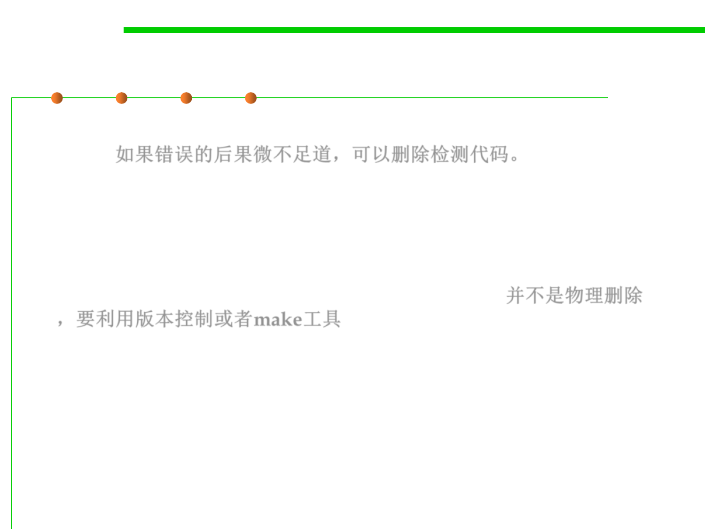

7.3 Assertions and Defensive Programming
(2) Remove code that checks for trivial errors
▪ If an error has truly trivial consequences, remove code that checks
for it. 如果错误的后果微不足道，可以删除检测代码。
▪ In the previous example, you might remove the code that checks
the spreadsheet screen update.
▪ “Remove” doesn’t mean physically remove the code. It means use
version control, precompiler switches, or some other technique to
compile the program without that particular code. 并不是物理删除
，要利用版本控制或者make工具
▪ If space isn’t a problem, you could leave in the error-checking code
but have it log messages to an error-log file unobtrusively.